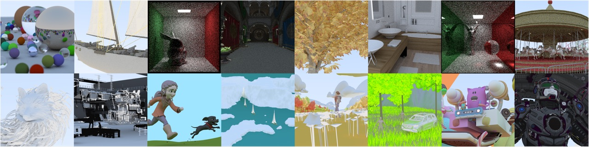
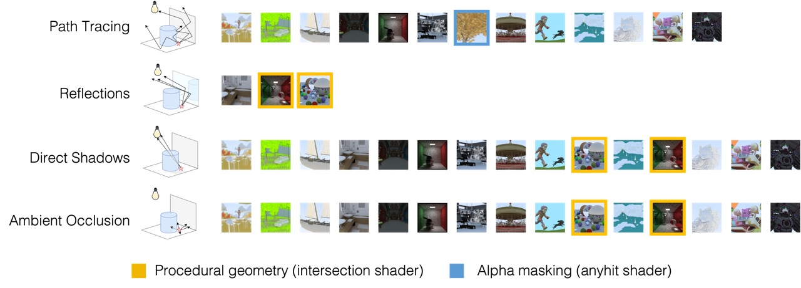
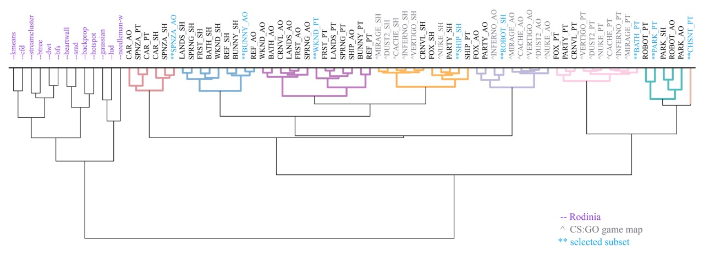

Abstract
Ray tracing as a graphics rendering method is becoming increasingly popular in real-time applications, supported by dedicated accelerator cores in the latest generation GPUs.
However, the high computational intensity of the ray tracing algorithm still limits the visual effects that can be produced while maintaining a high frame rate.
To improve ray tracing hardware, it is important to understand the underlying characteristics of ray tracing workloads and identify performance bottlenecks.
In this paper, we present LumiBench, the first benchmark suite for evaluating ray tracing hardware performance in modern GPUs designed to execute on the Vulkan-Sim GPU simulator.
LumiBench features a diverse set of scenes and shaders that are representative of real applications but simple enough to be simulated in a reasonable amount of time.
We first evaluate LumiBench against Rodinia to highlight the difference between ray tracing versus general purpose workloads and demonstrate the need for a dedicated benchmark suite.
Then, we characterize the workloads included in LumiBench, which are organized into several clusters targeting different aspects of the ray tracing pipeline, and provide insights for future architectural research.
How to Use
- Download the Vulkan-Sim v2.0.0 GPU simulator from our GitHub repository.
- Follow Vulkan-Sim installation instructions and compile Vulkan-Sim and Mesa accordingly.
- Download the RayTracingInVulkan benchmark application from our GitHub repository and compile.
- Follow the
README for Vulkan-Sim to run the benchmark application on the simulator. Refer to the README for RayTracingInVulkan to launch different workloads using command line arguments. Modify the gpgpusim.config file to simulate different GPU configurations.
- Run the workloads and parse Vulkan-Sim statistics from console output.
For performance studies of different GPU configurations, we recommend running the representative LumiBench subset and computing the geometric average of the IPCs (gpu_ipc) for the 8 workloads.
For performance studies of new hardware features that target a specific component or use case of the ray tracing pipeline, we recommend running all the workloads in the relevant cluster in addition to the representative subset.
For example, research targeting reflection rays should first run BATH_PT, REF_PT, and WKND_PT, and then the representative subset, computing two geometric averages showing the performance improvement for reflection rays and the overall performance improvement, respectively.
Please cite our paper if you use LumiBench benchmarks in your research!
@inproceedings{lumibench,
title={{LumiBench}: A Benchmark for Hardware Ray Tracing},
author={Liu, Lufei and Saed, Mohammadreza and Chou, Yuan Hsi and Grigoryan, Davit and Nowicki, Tyler and Aamodt, Tor M},
booktitle={Proc. IEEE Int'l Symp. on Workload Characterization (IISWC)},
year={2023},
}
Please cite Vulkan-Sim if you use the simulator in your research!
@inproceedings{vulkan-sim,
title={{Vulkan-Sim}: A {GPU} Architecture Simulator for Ray Tracing},
author={Saed, Mohammadreza and Chou, Yuan Hsi and Liu, Lufei and Nowicki, Tyler and Aamodt, Tor M},
booktitle={Proc. IEEE/ACM Int'l Symp. on Microarchitecture (MICRO)},
year={2022},
}
More Details
LumiBench is a benchmark suite for evaluating the performance of ray tracing hardware in modern GPUs using the Vulkan-Sim GPU simulator.
It includes 16 scenes and 3 shaders that are representative of most common ray types and scenes of real applications, but simple enough to still be simulated in a reasonable amount of time.

Furthermore, we evaluate LumiBench for diversity and coverage using characterization results obtained using the Vulkan-Sim GPU simulator.
Applying PCA to the characterization results, we identify 8 clusters that are representative of different types of ray tracing workloads.
We compare against the Rodinia benchmark suite and find it does not cover the same range of workloads as LumiBench, showing the importance of a dedicated benchmark suite for ray tracing hardware research.

Please read our paper for more details!
Resources